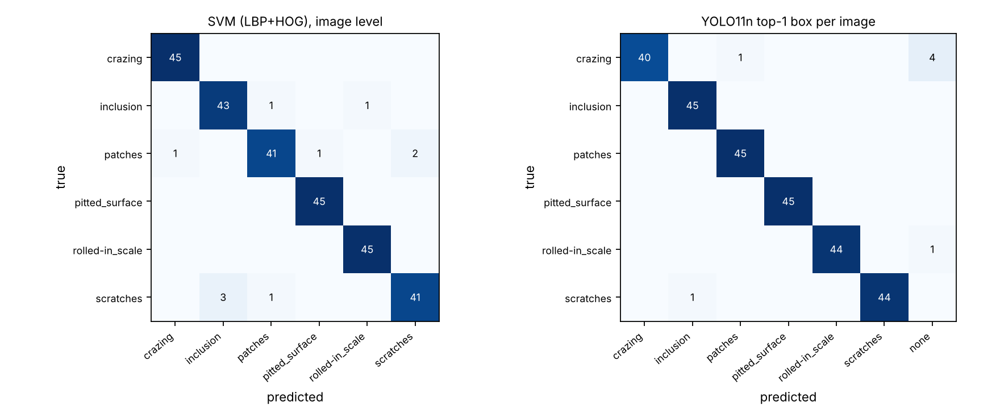
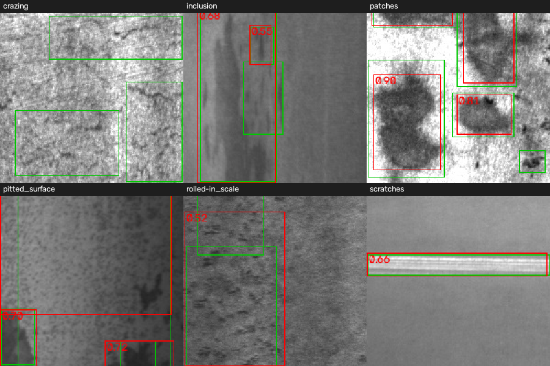

Detections come from a YOLO11n model run on real NEU-DET test images. The production stream, defect rates, false-alarm rate and all EUR figures are simulated / modelled.
p-chart
fraction flaggedcentre linecontrol limitsalarm
Pareto of detected defect types
flagged partscumulative %
Rules: one point above the upper control limit (UCL), or eight in a row above the centre line. Limits come from the baseline batches (Phase I); only later batches can alarm.
Per-class box recall (YOLO)
Image-level class accuracy
YOLO and the SVM are about equal at naming the defect (a 3-image difference on 270 images). YOLO adds localisation.
Precision / recall vs confidence threshold (test)
part-level flag recallbox recall (IoU 0.5)box precision
The threshold is frozen from the validation split; this sweep is shown for transparency, not for tuning.
Confusion matrices (test)

Example detections

Green: ground truth. Red: model detections.
Every number here is modelled from assumptions (volumes, costs, human miss rate, AI false-alarm rate). Only the AI part-level recall is measured, on clean public images. The modelled saving is driven mostly by the assumed cost of an escaped defect, the assumed defect rate and the assumed human miss rate. It is not a business case.
Modelled total saving per year vs 100% manual inspection
Expected uses the measured recall. Pessimistic cuts recall by 15 points and raises the assumed false-alarm rate. 20,000 Monte Carlo runs each.